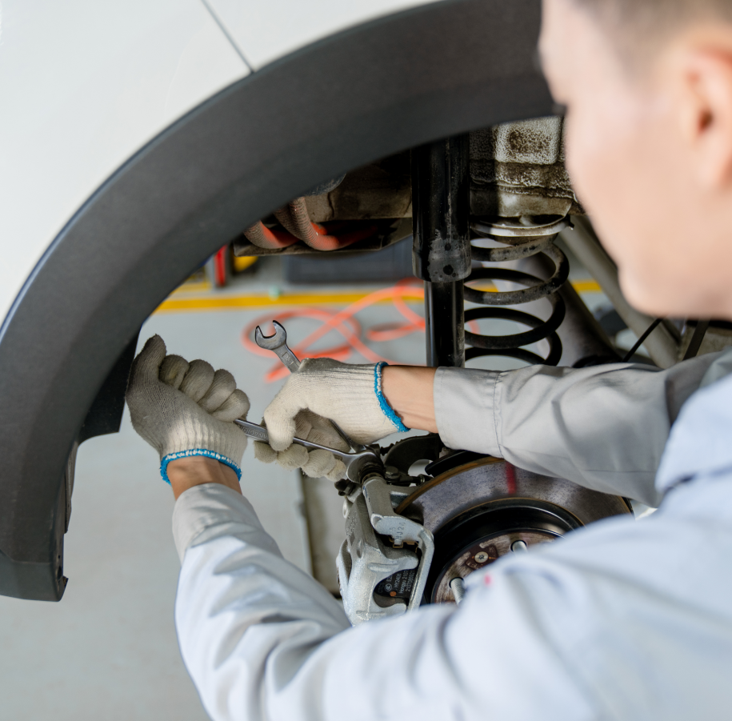
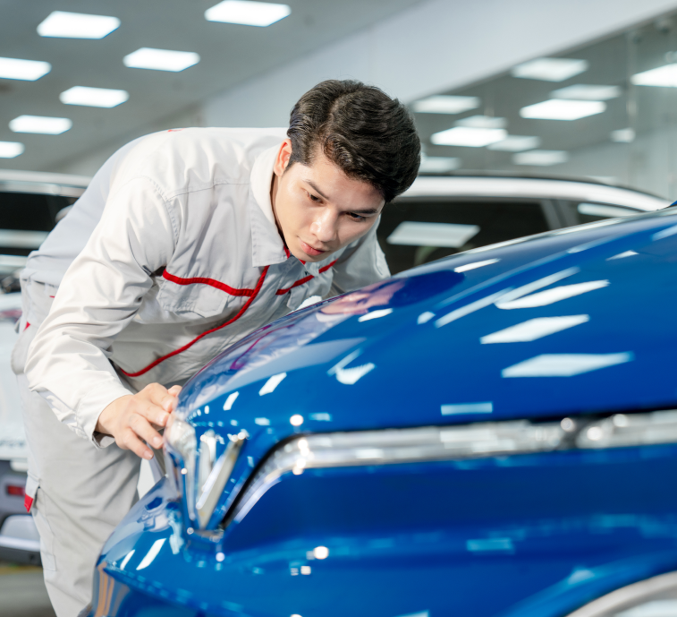
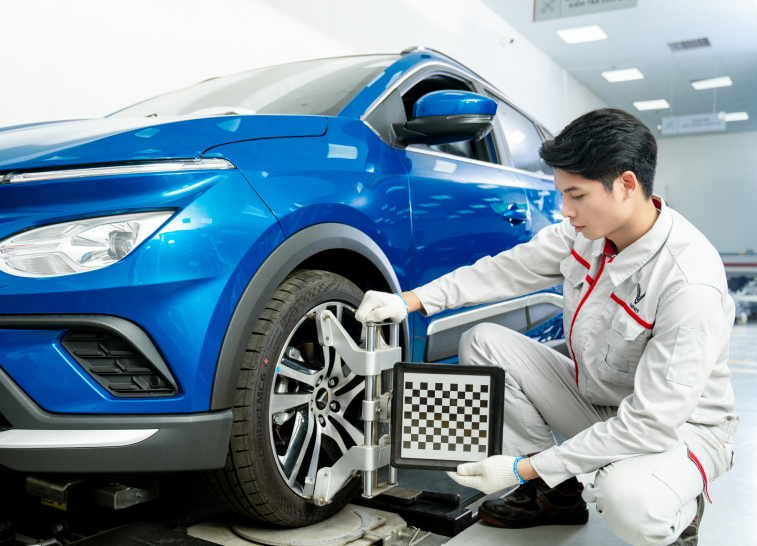
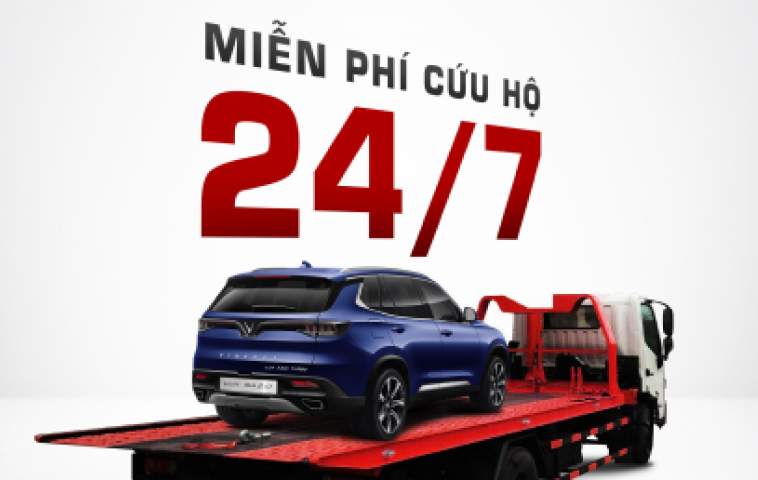
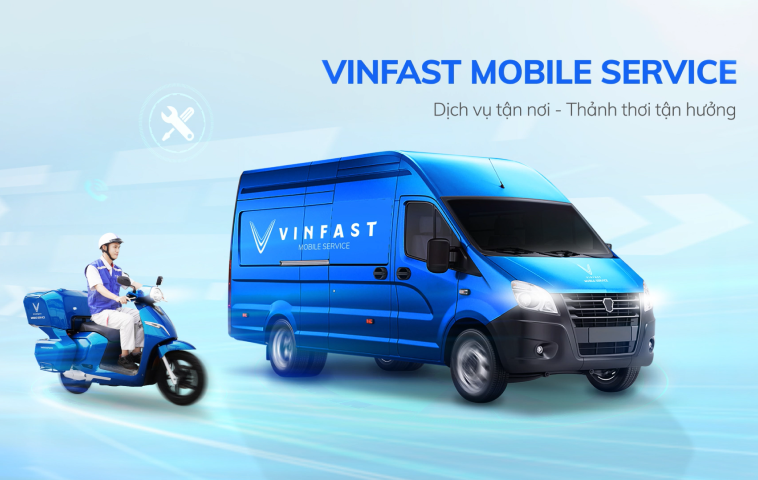

Quy Trình Dịch Vụ
Chuyên nghiệp và chu đáo với 5 bước
BƯỚC 1
Nhắc bảo dưỡng & Đặt hẹn
BƯỚC 2
Tiếp nhận và tư vấn
BƯỚC 3
Sửa chữa
BƯỚC 4
Bàn giao xe
BƯỚC 5
Chăm sóc sau sửa chữa
- Khách hàng mua xe mới và làm dịch vụ tại xưởng sẽ được nhắc bảo dưỡng trước 10 ngày so với ngày dự kiến đến kỳ bảo dưỡng.
- Các cuộc hẹn trước ít nhất 4 tiếng được tiếp nhận và xác nhận hẹn.
Thông tin sửa chữa và bảo dưỡng
Sửa chữa chung
- Kiểm tra chẩn đoán các vấn đề gặp phải trên xe của Khách hàng. Đưa ra phương án xử lý để chiếc xe luôn vận hành ở trạng thái an toàn nhất.
- Tất cả các phụ tùng bảo dưỡng, sửa chữa thay thế đều được cung cấp chính hãng, luôn sẵn sàng đáp ứng nhu cầu của Khách hàng nhanh nhất và chất lượng tốt nhất.
- Trang thiết bị hỗ trợ kiểm tra, chẩn đoán và sửa chữa được đầu tư đồng bộ từ các nước Ý, Nhật, Đức… đảm bảo các tiêu chuẩn kỹ thuật khắt khe của xe VinFast.
- Hệ thống quản lý thông tin dịch vụ xe đồng bộ trên tất cả các NPP/SR toàn quốc. Giúp cho việc kiểm tra lịch sử sửa chữa và chăm sóc Khách hàng một cách tốt nhất.
- Đội ngũ VinFast được đào tạo chuẩn hóa về kỹ thuật trực tiếp tại nhà máy sản xuất xe ô tô VinFast. Đạt tiêu chuẩn về năng lực chẩn đoán, sửa chữa và bảo dưỡng.

Sửa chữa đồng sơn
Sửa chữa hư hỏng nhẹ:
- Sử dụng các trang thiết bị hiện đại, giúp rút ngắn thời gian sửa chữa. Hạn chế tối đa việc biến dạng bề mặt vỏ xe cũng như thay đổi kết cấu vật liệu vỏ xe sau khi sửa chữa.
Sửa chữa hư hỏng nặng liên quan tới thay thế vỏ xe mà chưa biến dạng tới khung xe:
- Sử dụng máy hàn dây Mig CO2 với đường kính 0.8 mm không làm phát sinh nhiệt và biến dạng vỏ xe trong quá trình sửa chữa.
- Sử dụng máy hàn điểm điện trở đồng bộ với nhà máy sản xuất để đảm bảo tính thẩm mỹ sau khi sửa chữa.
Sửa chữa thay thế hư hỏng nặng đã biến dạng vào khung gầm:
- Sử dụng bộ nắn khung xe Spanesi hiện đại bậc nhất của công nghệ Ý. Giúp việc kéo nắn đạt độ chính xác cao cũng như thời gian được tối ưu hóa.
- Trang bị bộ thước đo điện tử giúp việc sửa chữa chính xác với kích thước 3 chiều. Đảm bảo các góc đặt bánh xe được phục hồi chính xác theo nhà sản xuất giúp xe vận hành êm ái và nhẹ nhàng sau khi sửa chữa.
Sửa chữa sơn:
- Quy trình sơn 14 bước vô cùng tỉ mỉ, để đảm bảo lớp sơn có độ mịn, bóng và màu sắc như ban đầu.
- VinFast sử dụng sơn gốc nước với nhiều ưu điểm so với sơn gốc dầu: An toàn, thân thiện với môi trường, độ che phủ màu tốt và có màu sắc chân thật hơn.
- Hệ thống hút bụi trung tâm được sản xuất từ Ý sử dụng công nghệ tự động làm sạch phần tử lọc với quy trình lọc bụi 3 bước, đơn giản và hiệu quả lọc rất cao đảm bảo tiêu chuẩn về môi trường.."

Cân chỉnh góc đặt bánh xe/ cân bằng động
- Sau thời gian sử dụng, vận hành. Do nhiều nguyên nhân khác nhau như: điều kiện mặt đường, xe chở quá tải, va quệt... Các sai lệch trong góc đặt bánh xe sẽ xuất hiện, lốp xe bào mòn không đều. Từ đó dẫn tới các hiện tượng như: rung lắc vô lăng ở tốc độ cao, lệch lái, nhao lái.
- VinFast sử dụng các trang thiết bị hiện đại của Ý, trả lại các thông số góc đặt như xe mới sản xuất, giúp xe vận hành ổn định, êm ái và tránh những hao mòn lốp, các chi tiết cơ khí… và đặc biệt là an toàn khi vận hành.
Cần cân chỉnh góc đặt bánh xe nếu xe gặp các vấn đề sau:
- Sau khi xe trải qua chấn động lớn (leo lề đường cao, sụp ổ voi, ổ gà…).
- Sau khi xe gặp tai nạn hoặc đâm đụng mạnh.
- Sau khi thay thế phụ tùng ở gầm xe, hệ thống treo.
- Khi xe di chuyển trên đường thẳng, phẳng nhưng lại có xu hướng lệch trái hoặc phải. Điều này gây mệt mỏi cho người lái và ảnh hưởng đến độ an toàn khi tham gia giao thông.
- Khi bạn vào cua hoặc rẽ hướng, tay lái không trả về dễ dàng hoặc khó cân bằng lại.
- Khi bạn phát hiện lốp xe có hiện tượng mòn không đều.
- Vô lăng bị lệch.
Khuyến cáo: Nên kiểm tra góc đặt bánh xe 6 -12 tháng/ lần.


Cứu hộ 24/7
- Dịch vụ tổng đài hỗ trợ và cứu hộ miễn phí 24/7 khi xe gặp sự cố kĩ thuật: (1900 23 23 89).
- Dịch vụ 24/7 sẵn sàng hỗ trợ bất kể nơi đâu ngay sau khi nhận được cuộc gọi của khách hàng.
- Cứu hộ miễn phí cho các lỗi/ hư hỏng... Gây dừng vận hành khi xe còn đang trong điều kiện bảo hành. (Áp dụng với khách hàng sử dụng xe VinFast hoặc Chervolet).
Sửa chữa lưu động
(VinFast Mobile Service)
Mobile Service là dịch vụ gia tăng được triển khai song song với hệ thống mạng lưới các Xưởng dịch vụ và chính sách cứu hộ hiện có của VinFast để đáp ứng tối đa nhu cầu dịch vụ và mang lại sự thuận tiện cao nhất cho khách hàng.
